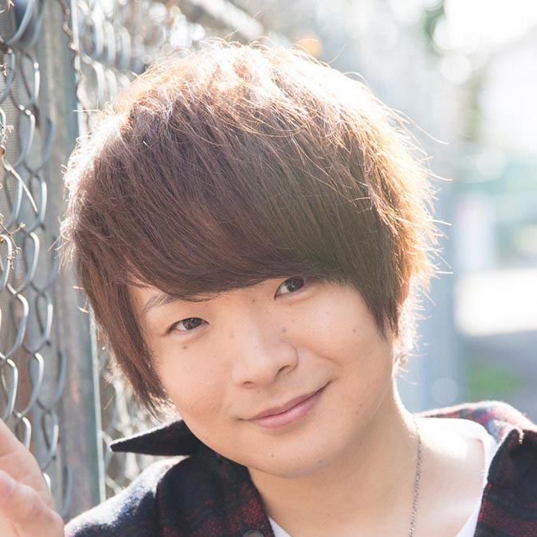

【声マガ・インタビュー】高梨 謙吾
TOPICS
PROFILE
アーツビジョンに所属する高梨謙吾さんは、東京都出身の6月12日生まれ。『ドロヘドロ』（藤田役）、『七星のスバル』（天羽陽翔役）、『スタミュ』（蜂矢聡役）等に出演。2020年4月放送予定の『白猫プロジェクト ZERO CHRONICLE』はアデル役で出演。
高梨さんは大のゲーム好き。「寝る間も惜しんでやっている時もある」のだとか。最近は、「ガンシューティングでストレス発散するのが自分の中のトレンド」だそう。その脇には、アイ（2歳半）とメイ（1歳半）という2匹の雄猫が。共に生後1ヵ月の頃から、2時間毎にミルクをあげるなどして大事に育て上げた愛猫です。そんな高梨さんに、声優をめざしたきっかけと日本ナレーション演技研究所（以下、日ナレ）で学んだことや、今後の目標についてお話していただきました。
「いい声だね」と褒められた中学時代、声優になることを決意
声優という仕事を意識したのはいつ頃ですか？
小学生の終わりから中学生にかけてくらいだったでしょうか。元々ゲームが大好きだったんですが、ちょうどその頃、キャラクターに声がついているゲームが増えてきて、それをきっかけに意識するようになりました。
では、声優をめざしたきっかけを教えてください。
中学生の時、友達とゲーム制作ツールを使って、ゲームを作り始めたんです。その過程で、「声も入れられたら本格的だよね」という話になって、僕が声を録音したら、友達がサラッと「いい声だね」と言ってくれて。そこから思いあがったんですね（笑）。以来、遊び感覚で、いろいろな声を録音するようになって、次第に声優になりたいって考えるようになりました。
中学時代に声優になると決めたのですね。
はい。で、思い立ったらすぐに行動したくなるタイプなので、中学を卒業したら高校には進まず、声優になる道一本で学びたいと思って、専門学校や養成所、通信教育について調べ始めました。でも、親に話したら、「せめて高校だけは行きなさい」と言われてしまいまして。高校時代は演劇部に入ることもなく、芝居の勉強をすることもなく、テニス部に入って、普通に高校生活を満喫していたんですが、そのすべてが声優になった今、活きていると感じています。
日ナレを選んだ理由を教えてください。
「演技」と「ボーカル」と「ダンス」が学べる週3回クラスがあったことです。当時、マルチに活躍する声優が増え始めていて、僕自身、歌が好きだったし、ダンスも高校時代に文化祭でやって、体を動かすことにすごく楽しさを感じていたので、歌とダンスの経験も積みたいと思ったんです。週3回だったらバイトして、お金を稼ぎつつ通えるし、日ナレは受講料が比較的安かったのも魅力でした。
入所した頃の日ナレの印象について教えてください。
いろいろな人がいるなっていうのが第一印象でした。お芝居をするうえでは、人と人との濃いつながりを作っていくことが必要なんですが、年齢も個性も様々なクラスメイトたちと話し合ったり、練習したりするのは本当に楽しくて。高校も楽しい青春時代だったけど、日ナレは第二の青春時代って感じでした。
基礎科で印象に残っていることはありますか？
最初は、声優になるための養成所なのに、アフレコとかマイク前のレッスンじゃないんだということに衝撃を受けました。でも、発声やかつ舌、感情の表現法などを学んでいくうちに、基礎を身につけることがどれだけ重要か感じたし、それをしっかりやっていけば、いつかは自分も声優になれるって思えました。
ボーカルやダンスのレッスンはいかがでしたか？
好きな歌とダンスを磨けるのは楽しかったし、歌う、踊る以外のいろいろなことも学べました。例えば、声優になったら、ダンスしながら話すというシーンや、ダンスをしている時の息遣いをあてることもあるかもしれないし、ダンスのシーンでなくても、動きながらのセリフは体をうまく使わなければならないので、ダンスで体の使い方を学べたことはものすごく役に立ちました。ボーカルレッスンも、自分の中での音の使い方を研究できる時間で、今にとても活かされているなと感じています。
日ナレ時代、講師の方に言われて印象に残っている言葉はありますか？
研修科の時、演技の講師に「日ナレのレッスンは週に1回3時間しかないけど、それ以外の6日と21時間をどう使うか。その使い方次第で今後が変わる」と言われたことです。その頃はピンとこなかったし、そもそも僕自身、自分の引き出しを増やすための研究が好きだったので、日々、漫然と過ごすのではなく、常に空いている時間は演技の糧にしようという意識を持って、研究と努力を重ねていました。プロになった今、時間の使い方が能力の差に表れるとすごく感じているので、講師の方の言った通りだなって、よくその言葉を思い出します。
いつ仕事が来てもいいように常に自分の能力を高め続けた
事務所に所属したのはいつですか？
本科の終わりの所内オーディションに合格し、アーツビジョンに所属しました。
初めての仕事を覚えていますか？
最初はラジオＣＭでした。同じ事務所の同期と先輩とお芝居をしたのですが、ド緊張で、与えられたセリフを言うことだけでいっぱいいっぱい（笑）。所属して3年目だったので、マイク前の芝居は日ナレでも事務所のレッスンでも経験済みだったのに、普段できていることが全くできないという……。新人は誰も最初の仕事でそうなると言われますが、僕ももれなくその経験をしました。
事務所に所属して3年間、仕事がなかったのですか？
はい。同期の中にはどんどん仕事を得ていく人もいましたから、正直、不安も焦りもありました。でも、焦ったところでどうにもならないし、精神衛生上、良くないので。いずれ必ず仕事が来ると信じて、今できることやレッスンを必死に頑張ることに集中しました。オーディションも他の出演者との声のバランスがあったり、運やタイミングも影響しますからね。ただ、いつ運とタイミングが訪れるかわからないので、その時に備えて、常に自分の能力を高め続けておくよう、ひたすら努力していました。
デビュー当時の作品で最も印象に残っているものを教えてください。
最初は外画の吹き替えの仕事が多かったのですが、レギュラーで出演した外画ドラマの『メル＆ジョー 好きなのはあなたでしょ？』はとても思い出に残っています。シットコムと言われるシチュエーション・コメディで、演出としてドラマの途中で笑い声が入るんです。台本にはその部分に（笑い）と書いてあるんですが、収録にあたっては、どのように（笑い）に向かって、セリフの流れを持っていったらいいか、演技を考えなければならなくて。初めて経験だったので、すごく衝撃だったし、勉強になりました。
初めてのアニメの仕事はいかがでしたか？
事務所に所属して4年目だったかな、最初は名前のない役でした。外画はレシーバーで担当する役者さんの声を聴きながらセリフを言うんですが、アニメは耳に何もつけず、無音の状態で目の前の映像に声を合わせて演技するんです。マイクワーク自体はアニメも外画も同じだけど、全く違う仕事なんじゃないかと思うくらい勝手が違いましたね。
お仕事をするようになって、日ナレで学んだことが活きていると実感することはありますか？
基礎科の最初の頃に受けた、感情を爆発させるレッスンはものすごく活きているなと感じています。ドラマチックな場面って感情がものすごく揺れ動きますよね。そのシーンを切り取って30分ないし1時間の作品にしたものに僕らは声をあてるわけですが、普段、生活している中で、大声を出したり、テンションを限界まで上げたりすることってあんまりありませんからね。特にアニメは誇張された表現が多いので、普段の生活の中だけで作った引き出しでは対応しきれません。反対に、感情を抑える演技も学んだんですが、それも今、活きていますね。新人の頃は、どうしても演技が平坦になりがちだけど、感情の起伏を作って演技にメリハリをもたせることができるようになったのは、基礎科のレッスンのおかげだと思っています。
日ナレに通って、声優に対するイメージが変わったのでは？
圧倒的に変わりましたね。日ナレに通う前は、いい声を出すとか、声作りばかり考えていましたが、通い始めてからは、まず大事なのはお芝居だと知って、感情をしっかり作ってセリフにニュアンスを乗せていくということを第一に考えるようになりました。声そのものもキャラクターを造形する上で大切な要素だけど、何気ないセリフもニュアンスを乗せなければ、リアリティが感じられないですからね。何気ないセリフを何気なく言うのにも技術がいることを学びました。
高梨さんは、ナレーションの仕事もたくさんされていますね。
ナレーションは基本、感情を爆発させずに淡々と、そしてしっかりと、かつ舌良く音を聞かせなければいけないので、またお芝居とは感覚が違いますね。僕は文字を見ると声に出して読みたくなっちゃうので（笑）、ナレーションのお仕事をいただく前から、自主的に朗読など繰り返し練習していたんですが、お芝居もナレーションも、ベースは1音1音ハッキリ話すということなので、日頃からその練習をしておくことは必要だと思います。
声優は職人。生涯現役で自分の芝居を提供し続けたい
これまでの声優人生の中で転機になった作品はありますか？
始めて外画で主役をさせていただいたディズニーチャンネルのドラマ『オースティン＆アリー』でしょうか。大きい作品のオーディションに受かったということも自信になりましたが、何より主役ということで、芝居で頑張って引っ張っていけるよう、人一倍努力しようと決意して現場に臨み、主役を演じきったことは、大きな自信につながりました。以後、それまでよりゆとりをもってマイク前に立てるようになり、この作品を機に、外画のお仕事をさらにいただけるようになりました。
声優になって良かったと思った瞬間はありますか。
外画の吹き替えで、誰に見せても自慢できるなっていうくらい良い芝居したと思った瞬間がありまして。ゾクゾクするくらい快感で、その瞬間、声優になって良かったって強く感じました。
ご自身が考える声優の仕事の魅力について教えてください。
僕は昔から声優って職人だなと思っていたんですが、声だけで一つひとつの動きを見せ、表現するという技術がどれほど難しいことか、プロになった今、改めて感じています。マイクワークという制約がある中で、一つひとつのセリフにドンピシャでニュアンスを乗せていかなければなりません。例えば走りながらしゃべるとか。声優はそれを磨き続けているプロフェッショナル達なので、本当にすごいなって思います。
今後、どんな声優になりたいですか？
アニメでもっと主役をやりたいとか、売れたいという気持ちもありますが、僕らは求めていただかなければお仕事ができないので、ベースはまず、人から求められる人間、そして声優でありたいと思っています。そして生涯現役でありたいですね。その歳その歳で出せるものをメインにやりつつ、それまで演じてきた役柄も引き続きできるように自分を磨きつつ、高梨謙吾の芝居を提供し続けたいです。
最後に声優をめざしている方へメッセージをお願いします。
まずは人生を豊かにしてほしいと思います。声優の仕事は、経験したことすべてが糧になります。なので、一つの事に固執しすぎず、いろいろな経験をしてほしいです。たとえ声優になれなかったとしても、いろいろな経験をすることは絶対人生の役に立つし、人間力を高めることにもつながりますから。日々、漫然と過ごすのではなく、いろいろな事にアンテナを張って吸収してください。時間は有限ですから大事にしてください！
プロフィール
高梨 謙吾
- 所属事務所
- アーツビジョン
主な出演歴
- 七星のスバル（天羽陽翔）
- ハイスコアガール（ケンヂ）
- 覇穹 封神演義(白鶴童子)


{kind=link}
{kind=link}
{kind=link}
{kind=link}
{kind=link}
{kind=link}